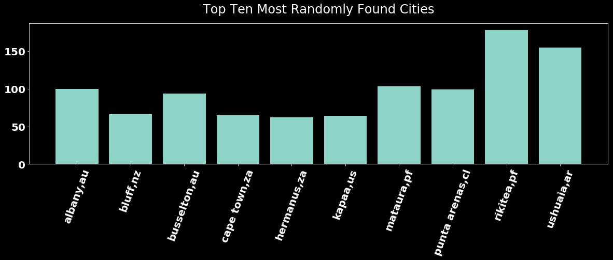

When throwing Darts at a map
In the process of generating random lat/long values for this project
I noted that fairly often the closest city to these randomly generated
points returned duplicates. I adjusted my code so that I could capture
and record these instances. The result is this graph
Since there's an equal chance for any area on the globe to be picked by
the random number generator. A fair number of our duplicates are in the southern
hemisphere, where there is a much higher chance of picking a lat/long value in the middle of
the ocean. Therefore our top 10 duplicates, for the most part, share these qualities
Isolated
Coastal
Located in the South Pacific